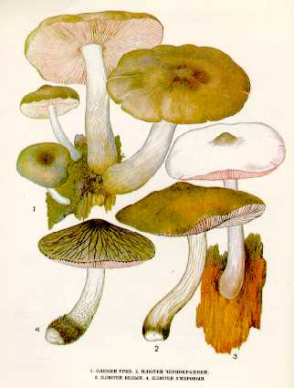

1. ОЛЕНИЙ ГРИБ.
ПЛЮТЕЙ ОЛЕНИЙ.
Встречается на пнях, на валежной гниющей древесине лиственных и хвойных деревьев в июне - сентябре.
Шляпка до
Пластинки свободные (не прикрепленные к ножке), широкие, частые, сначала белые, потом розоватые от спор. Споровый порошок розоватый.
Ножка до
Съедобный гриб четвертой категории. Употребляется вареным, сушеным и маринованным.
2. ПЛЮТЕЙ ЧЕРНОКРАЙНИЙ.
Растет на гнилых пнях и валежной
древесине. Встречается редко в июле — августе.
Шляпка 5—7 см в диаметре, распростертая, серовато-коричневая,
шелковистая. Мякоть в центре шляпки толстая, мягкая, вкус и запах
приятные.
Пластинки свободные, сначала белые, затем розовые,
с темно-бурым, почти черным краем. Споровый порошок розовый. Споры широкоэллипсоидные.
Ножка 5—10 см длины, 0,5—
Малоизвестный съедобный гриб. Употребляется свежим, соленым, маринованным.
3. ПЛЮТЕЙ БЕЛЫЙ.
Растет в лесах на валежной
древесине с мая по сентябрь, иногда встречается на лесных складах, на гниющих опилках.
Шляпка 3—6 см в диаметре, распростертая, белая,
с темным бугорком на вершине. Мякоть белая, тонкая, плотная, без особого вкуса и
запаха.
Пластинки свободные, частые, широкие, сначала
белые, затем розовые. Споровый порошок розовый. Споры яйцевидные или эллипсоидные.
Ножка 4—6 см длины, 0,5—
Малоизвестный съедобный гриб. Употребляется свежим, соленым, маринованным.
4. ПЛЮТЕЙ УМБРОВЫЙ.
Селится в широколиственных и хвойных лесах на
опавших ветвях, погруженных в почву, на пнях и около них. Плодоносит с июля по сентябрь.
Шляпка до
Пластинки свободные, частые, широкие, сначала
беловатые, затем розовые (по цвету спор), с бурым краем. Споровый порошок розовый.Споры овально-эллипсоидные,
гладкие, розовые.
Ножка до
Малоизвестный съедобный гриб. Употребляется свежим.